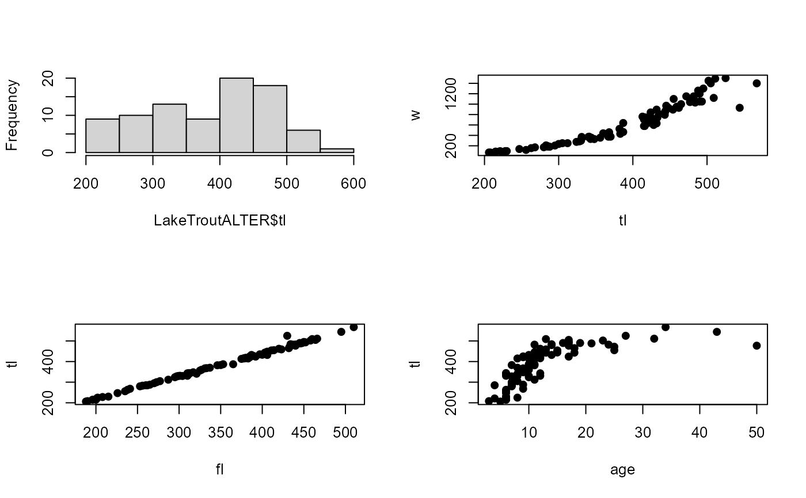

Biological data for Lake Trout from the Arctic LTER (AK).
Source:R/LakeTroutALTER.R
LakeTroutALTER.RdBiological data (lengths, weight, age, and sex) of Lake Trout (Salvelinus namaycush) sampled from Lake NE12 of the Arctic Long Term Ecological Research location.
Format
A data frame of 86 observations on the following 6 variables:
- id
A unique identification number.
- tl
Total Length (nearest mm) at capture.
- fl
Fork Length (nearest mm) at capture.
- sl
Standard Length (nearest mm) at capture.
- w
Weight (nearest g) at capture.
- otorad
Total otolith radius (mm) at capture.
- age
Age (completed growing seasons) at capture.
- sex
Sex of the fish (
F=female andM=male).
Source
Obtained from the Arctic LTER site. CSV file
Details
Lake trout were removed from Lake NE12 in the summers of 1986, 1988, and 1989 using five-panel experimental gill nets (mesh size of 0.75, 1, 1.5, 2, and 2.5 inches). Lengths, weights, and sex were recorded from the fish while otoliths, and if possible, stomachs and gonads were removed for future analysis. A check was performed on several otoliths by an independent colleague and prevents introduction of bias due to familiarity with the samples.The original file was “cleaned” in the following ways:
Only Lake Trout were kept in the data file.
All unknown sex fish were removed.
Fish with missing data (length, weight,age, or sex) were removed.
Decimals were removed from the ages.
The unique IDs for fish from 1989 were changed to start at 500.
The weight of fish number 509 was changed from 100 to 1100.
Examples
data(LakeTroutALTER)
str(LakeTroutALTER)
#> 'data.frame': 86 obs. of 8 variables:
#> $ id : int 18 512 307 52 84 37 80 36 17 59 ...
#> $ tl : int 225 247 256 268 285 288 295 324 328 330 ...
#> $ fl : int 202 226 235 241 262 265 270 295 297 299 ...
#> $ sl : int 185 212 209 228 240 244 243 273 278 280 ...
#> $ w : int 76 138 120 170 185 182 205 275 285 297 ...
#> $ otorad: num 0.84 0.879 0.843 0.944 0.99 ...
#> $ age : int 8 6 6 9 7 9 7 10 7 10 ...
#> $ sex : Factor w/ 2 levels "F","M": 1 1 1 1 1 1 1 1 1 1 ...
head(LakeTroutALTER)
#> id tl fl sl w otorad age sex
#> 1 18 225 202 185 76 0.8403 8 F
#> 2 512 247 226 212 138 0.8787 6 F
#> 3 307 256 235 209 120 0.8431 6 F
#> 4 52 268 241 228 170 0.9436 9 F
#> 5 84 285 262 240 185 0.9896 7 F
#> 6 37 288 265 244 182 0.9607 9 F
op <- par(mfrow=c(2,2),pch=19)
## Four (of many possible) examples
hist(LakeTroutALTER$tl,main="")
plot(w~tl,data=LakeTroutALTER)
plot(tl~fl,data=LakeTroutALTER)
plot(tl~age,data=LakeTroutALTER)

par(op)